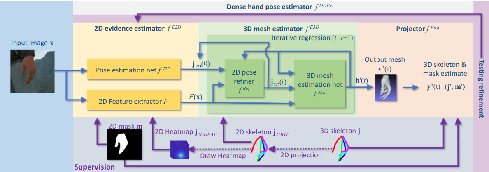

Description:
Hand pose estimation is important in robotics to understand human behavior [1]. There has been work on estimating the hand pose from single image [2] which leverages keypoint detections and 2D projection consistency with the 3D mesh. In the scope of this thesis, we would investigate how to estimate hand pose and the transformations of viewpoints jointly with multiple rgb images.
Requirement:
Students should be familiar with pytorch or tensorflow and have hands-on experience with deep learning in past projects. Aiming for a paper publication would be a plus.

Hand Pose Estimator [2]
Benefits:
you can learn state of art 6d object pose estimation networks and cooperate with experts both at the Chair and inside our industrial corporate partners.
[1] Hasson, Yana, et al. “Learning joint reconstruction of hands and manipulated objects.” Proceedings of the IEEE/CVF conference on computer vision and pattern recognition. 2019.
[2] Baek, Seungryul, Kwang In Kim, and Tae-Kyun Kim. “Pushing the envelope for rgb-based dense 3d hand pose estimation via neural rendering.” Proceedings of the IEEE/CVF Conference on Computer Vision and Pattern Recognition. 2019.